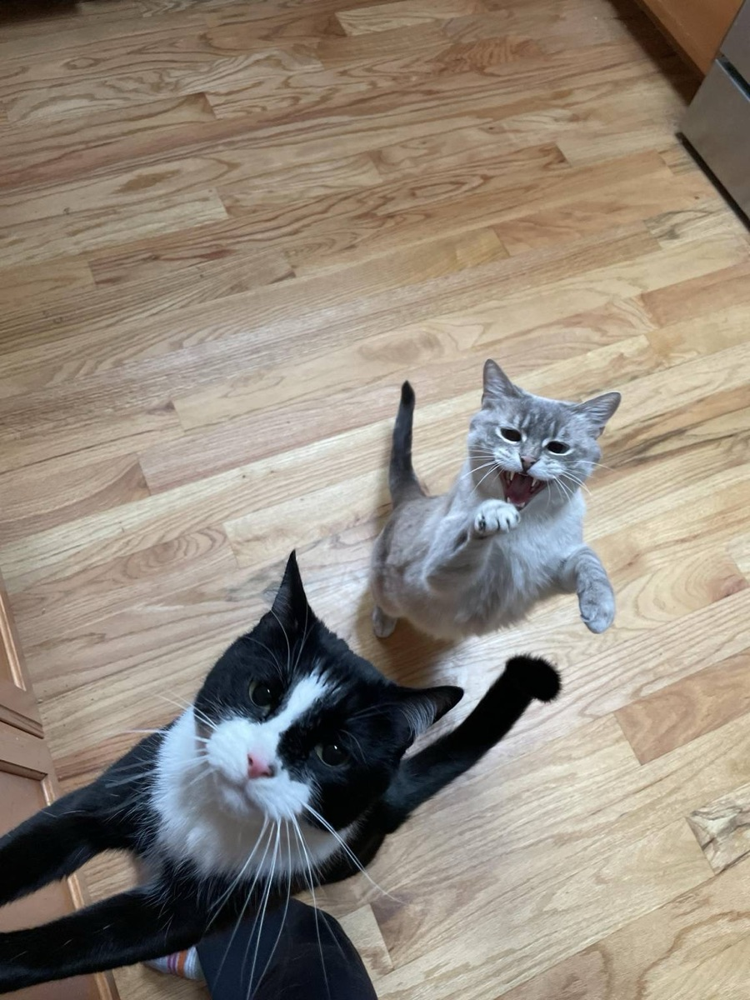
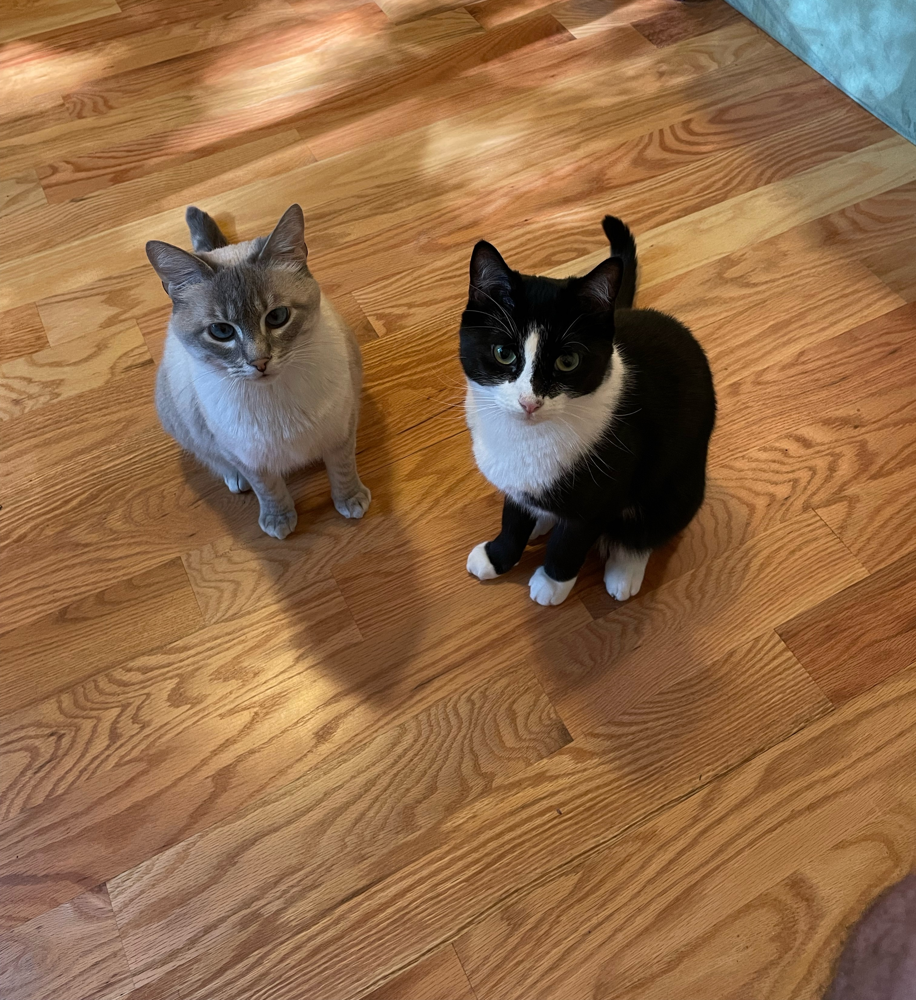

Our Story
Floof started with Momo, the first of my two cats. I adopted her from a Seattle shelter in 2020. I had always wanted a pet, and with COVID causing everyone to work from home, I went for it. I'm so happy I did. Over the next year, I watched Momo transform from the shy, nervous cat I met at the shelter into a confident, sassy little furball. The journey wasn't always smooth, but we went through it together and became lifelong friends along the way.
Pretty soon after she was adopted, Momo was diagnosed with asthma and IBD. It was a learning curve for both of us. She needed to get used to the inhaler, and I needed to learn an incredible amount of patience, develop faith, and discover just how strong-willed I can be when it comes to caring for those I love.
Two years after adopting Miss Momo, I decided to adopt a little brother for her, and we welcomed a spunky, handsome tuxedo cat named Tofu into the family.

They are yin and yang. Momo is calm, quiet, and prefers deep ruminations on sunny windowsills. Tofu, on the other hand, is a wild, wild, wild little boi.
Then, in 2024, Momo was diagnosed with early kidney disease. She also went through several asthma and IBD flare-ups that year. This was the first time things started to feel overwhelming. She needed medications on different schedules and diet changes to manage both kidney disease and IBD. Our vet asked us to keep a close watch on her litter box routine, and that year alone, she had at least five vet visits.
Tofu, though very healthy, was still young and needed plenty of playtime, training, and attention. I kept up with everything using notes on my phone, text threads, calendars, and reminders. It wasn't perfect, but it worked for us.

Then I got pregnant, and life got unimaginably busy. My usual systems couldn't keep up. Every time my partner or someone else stepped in to help, I had to fill them in on dosages, recent changes, and what to watch for.
I realized I needed a simpler system. I wanted one place to keep everything for both cats, where everyone involved in their care could stay up to date.
So I built Floof.
Floof keeps medications, meals, symptoms, appointments, and daily notes in one place, so everything and everyone stay in sync. It's designed for first-time pet parents, multi-pet households, and pets with special medical needs.
I want Floof to give you back a little time and headspace in your day, so you can spend more of it loving your pets.
Malvika, Founder